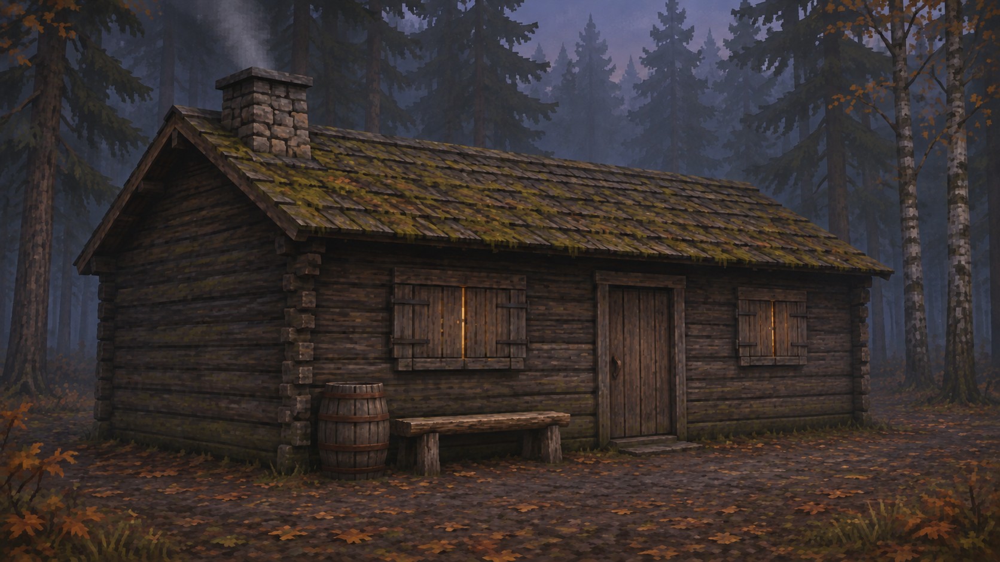

Дом и его обитатели
Запись 24 задаёт размер, назначение и взаимное положение предметов. Запись об Арне описывает повседневный уход за домом. От Ручейного сюда около двух часов пешком, от Порта Теней — два-три часа верхом.
Лес между Портом Теней и Ручейным
Охотничий сруб Арна. Одна комната, поляна над ручьём и коновязь, скрытая от тропы.

Вид сверху
Канон и рабочие материалы
Запись 24 задаёт размер, назначение и взаимное положение предметов. Запись об Арне описывает повседневный уход за домом. От Ручейного сюда около двух часов пешком, от Порта Теней — два-три часа верхом.
Главы II–IV описывают подход, дверь и первый вечер с одним топчаном. В VI главе герои идут к ивняку за корой, в VII чинят петлю люка. В XI появляется место для двух лошадей у ручья.
Последний отрезок пути проходят без телеги. У двери видна новая скоба засова, над топчаном Грейс остаётся пустой крюк. В «Хвате» добавляются табурет у топчана Никто и ведро у порога в дождь.
Координаты, размеры мебели и проёмов, скаты, отметки склона и расстояния у ручья взяты из рабочих чертежей Godot. Оси X и Z ориентированы по входному фасаду. План использует условный вид предметов сверху.
На авторской картинке снаружи жердь стоит у дома, а на картинке комнаты люк виден перед столом. Запись 24 помещает коновязь у ручья, люк — под столом. В финале «Хвата» очаг описан между героями у топчанов. На чертеже он у левой стены согласно записи 24.
Первый топчан описан у стены, без точного места. Весенний чертёж показывает его у правой стены условно. Стороны света, точные размеры погреба и положение дороги, где оставили телегу, открыты. В VII главе Арн стреляет по чурке у края поляны, а его шесть силков образуют кольцо примерно в получасе ходьбы от дома. Положение чурки в тексте открыто, силки лежат за пределами плана. Конюшня, второй выход и сигнализация остаются планами в записи 24. «Новый арбалет» находится на стадии чернового плана.
Авторский референс снаружиАвторский референс комнатыНовый арбалет